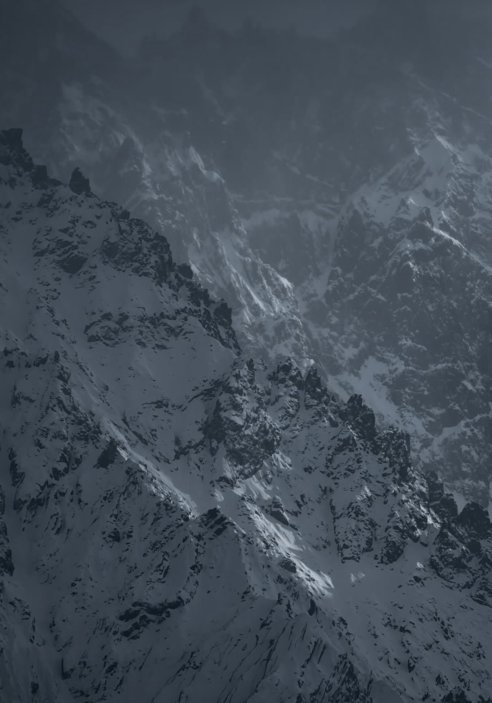

Two Journeys
Mine, and theirs. Both begin at home, and both are taken away from it.
-
iHome
I grew up with my family, in the city I knew.
The high ridges of the Tien Shan, where a snow leopard hunts alone, on cliffs few people will ever reach.
-
iiTaken away
At twelve I left my family for a boarding school in a different city. New people, a new place, and no phones or technology at all. No way to call home.
A fall, a snare, an injury. Some leopards are brought down from the mountains because they can no longer survive up there.
-
iiiLoss
The first years were the hardest. That is when I understood how deep it is, and how sad, to be without your family for so long.
They will never leave. The mountains they were made for are right there, and out of reach.
-
ivCare
Friends became my family. We lived under one roof and ate from the same pot. Our Abi, the teacher who held the duty of a father for our class of about fifteen, made sure we were okay.
My brother looked after snow leopards, making sure they were healthy enough to survive. People from town carried food up a hard mountain road and helped keep the houses and enclosures safe. We were proud of them.
-
vRitual
Every week we had a sohbet: we sat together with food, and talked about life — grief, connection, empathy, and how a person responds to loss.
When we lose someone, we gather. Women lament. Men dig the grave, raise the yurt, and the elders give the bata. This memorial opens that circle to them.
-
viWhat it became
It changed how I see the world: beautiful and cruel at the same time. Loss lives in every part of us, and it is also where care begins.
Protected land, rangers, and a population slowly climbing back — from 150–200 animals in 2000 to about 285 adults today.
A snow leopard hunts alone.
I survived because I was not alone.
They should not be mourned alone.
The Five
At the center there were five of them. In our tradition we say the names of those we have lost out loud. These are theirs.
The portraits are symbolic — mountains, rock and forest standing in for each of the five.
Set it free, or feed it
In 2022 and 2023 I helped my brother at a center like this one. Looking at the leopards there, I felt grief, because they are not supposed to live there. I felt lament, because their kind is so rare. And I felt anger, because they are hunted — their fur is worth a great deal of money on the black market.
“A woman was punished because of a cat she imprisoned until it died … she neither gave it food or drink, nor set it free to eat from the vermin of the earth.” Sahih al-Bukhari 3482
If you hold an animal, you owe it one of two things: freedom, or food. These five cannot be freed — freedom would kill them. So the duty falls on the second. That is why my town carried food up the mountain. It was more than kindness. It was a trust being kept.
The Changing Mountains
The leopards' world is being squeezed — by poaching first, and by a warming mountain range that is losing its ice.

Snow leopards in Kyrgyzstan
Shaded range = estimate range. Counts differ by method; the 2025 NABU camera-trap study (285 adults, range 234–349) is the most rigorous.
- Vulnerable on the IUCN Red List — a high risk of extinction in the wild.
- Up to 450 snow leopards are killed each year across their range, often in revenge for livestock, and for the fur and bone trade.
- Sarychat-Ertash State Reserve, set up in 1995 south-east of Issyk-Kul, protects 1,340 km² of their habitat — and still faces climate change, mining and overgrazing.
How We Grieve
My family is mostly Muslim, but we still keep some of the old customs. Kyrgyz faith comes in layers, and each one has something to say about the snow leopard.
Tengri — the eternal sky
Before Islam, the Kyrgyz honored Tengri, the sky, and the spirits of mountains, water and animals. It never fully disappeared: people still visit sacred springs and mountains, and families burn juniper at graves and call out the names of their ancestors.
In legend the snow leopard was the totem of Manas, the hero of our national epic. Here the animal is a relative, not a resource — the same way the Lummi Nation speaks of the orcas.
Islam — a trust, not a possession
“There is not an animal on the earth, nor a bird that flies with its wings, but they are communities like you.” — Qur'an 6:38
Humans are khalifa, stewards, and the Earth is an amanah, a trust from God. Poaching breaks that trust. Carrying food up the mountain keeps it.
Sohbet — a circle for life's questions
At school, every week, our Abi sat us in a circle with food and we talked about life: grief, personal connection, empathy, and how a person should respond to loss. It was a place for us and our wellbeing.
That circle taught me that grief needs three things: other people, a set time, and something shared to eat.
The voice
Koshok · women
Cries out, remembers, praises the one who is gone.
← looks back
The hands
The work · men
Digs the grave, raises the yurt, prepares the feast. Grief carried by doing.
↓ holds the present
The blessing
Bata · elders
The most respected people bless the living and the year ahead.
looks forward →
The Ash · October 23
A memorial feast for the Ak Ilbirs, once a year on International Snow Leopard Day — the anniversary of the 2013 Bishkek Declaration. A set day, so grief has a beginning and an end.
until the next gathering
Looking Forward
Lament is not despair. It believes things can change — and here, they already are.
Since 2000 the population in Kyrgyzstan has been recovering, because of rangers like Gruppa Bars, conservation groups like NABU and the Snow Leopard Trust, and people like my brother and the people of my town.
Keep the trust — choose what you will do
Readings & Sources
Grief as a rite of passage
My years at boarding school moved through something like Kübler-Ross's stages: denial and despair in the first years with no contact home; acceptance when friends became family; and transformation, when I began to see the world as beautiful and cruel at once. Seeing the leopards brought that grief back, now aimed at something beyond myself.
Tokitae and the Ak Ilbirs
When I was reading Caitlin Gibson's The Call of Tokitae, I kept thinking about the snow leopards I saw back home. Her story touched my heart. She was taken young and kept far from her family for more than fifty years, and the Lummi still called her their relative and never stopped trying to bring her home. I know a little of what it feels like to be far from home as a child. I thought of the five leopards behind the fence, and of my brother and the people of my town who cared for them like family.
| Tokitae | The five | |
|---|---|---|
| Taken from | Her pod in the Salish Sea | The wild Tien Shan |
| Held in | A tank in Miami, 50+ years | An enclosure, for life |
| Who grieved | The Lummi Nation, as family | A town, as its national animal |
Riley: fear, lament, rage
Riley ties rage to love: anger at the fur trade is what love feels like when something we love is harmed. And she insists God comes alongside us in fear and sorrow — the way an Abi stays beside a child far from home, not taking the hardship away, but not leaving either.
Sources
- NABU (2025) — Kyrgyzstan snow leopard population study
- Sarychat-Ertash State Reserve monitoring study (bioRxiv)
- WWF — Snow leopard · WWF-UK
- WWF — Climate vulnerability in snow leopard habitat, Central Tian Shan
- ScienceDaily (2015) — Tien Shan glacier ice loss
- Earth.com — Central Asian glaciers, projections to 2100
- GSLEP — The Bishkek Declaration (2013)
- University of Central Asia — Kyrgyz funeral laments
- Down to Earth — The snow leopard as totem in Central Asia
- Qur'an 6:38 · Sahih al-Bukhari 3482
- Caitlin Gibson — The Call of Tokitae
- What is Missing? — Maya Lin's memorial to the planet, the inspiration for this site's form
Photographs and clips are by their original creators, not by me; the video clips are from Instagram (1, 2, 3), used for a class project.